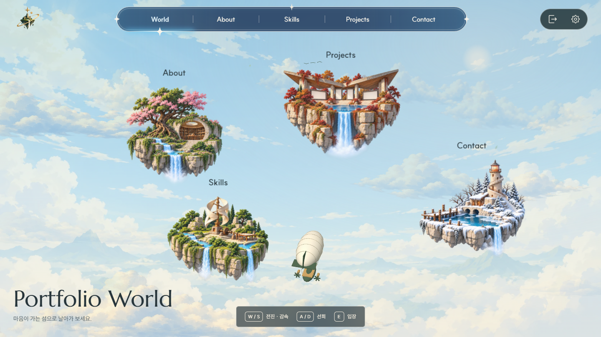
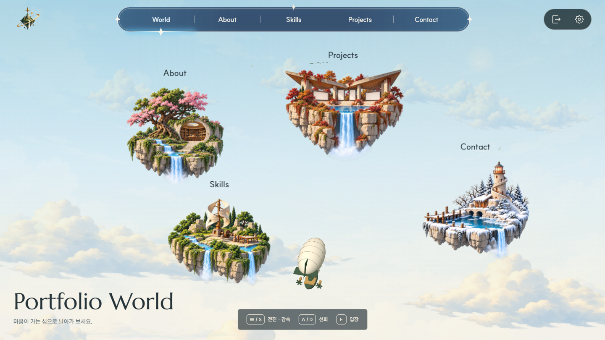
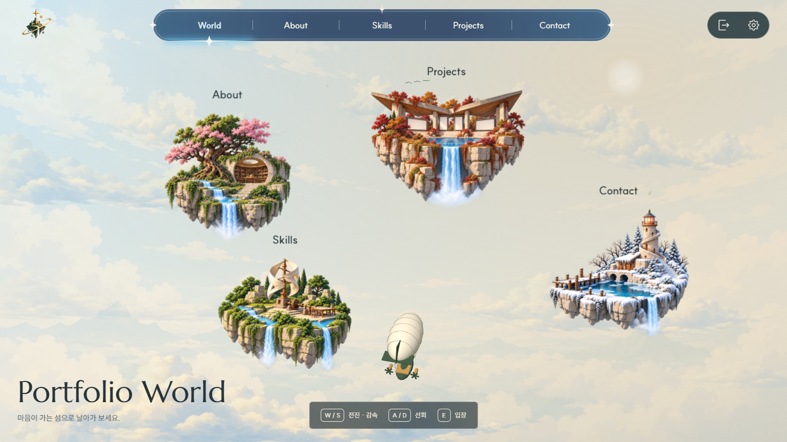

01 맑은 아침선택 완료 · 현재 적용푸른 하늘과 먼 산맥, 얇은 햇빛. 사계절 섬의 자연스러운 색을 유지하고 탐험 분위기를 강조합니다.움직임: 여러 깊이의 구름, 먼 새 떼, 바람과 소량의 잎.
02 높은 구름 바다미선택 · 비교 후보중앙 하늘은 비우고 구름은 아래에 모읍니다. 섬의 실루엣과 비행선이 가장 또렷하게 보입니다.움직임: 낮게 흐르는 구름층, 그 위를 가로지르는 새와 비행선.
03 따뜻한 아침빛비교 후보기존 아이보리와 따뜻한 강조색을 햇빛에 사용합니다. 석재 건물과 가을 전시관이 부드럽게 어울립니다.움직임: 완만한 햇빛 변화, 느린 구름, 드문 나뭇잎.